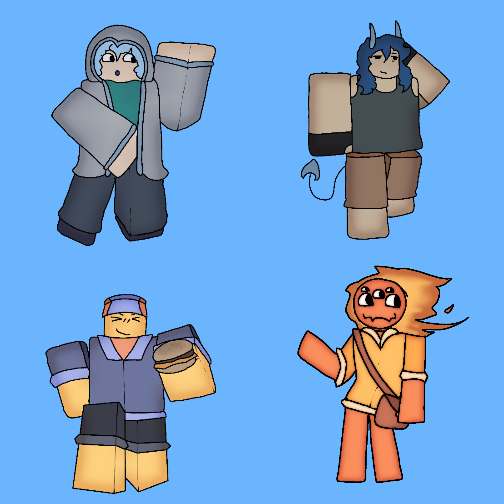
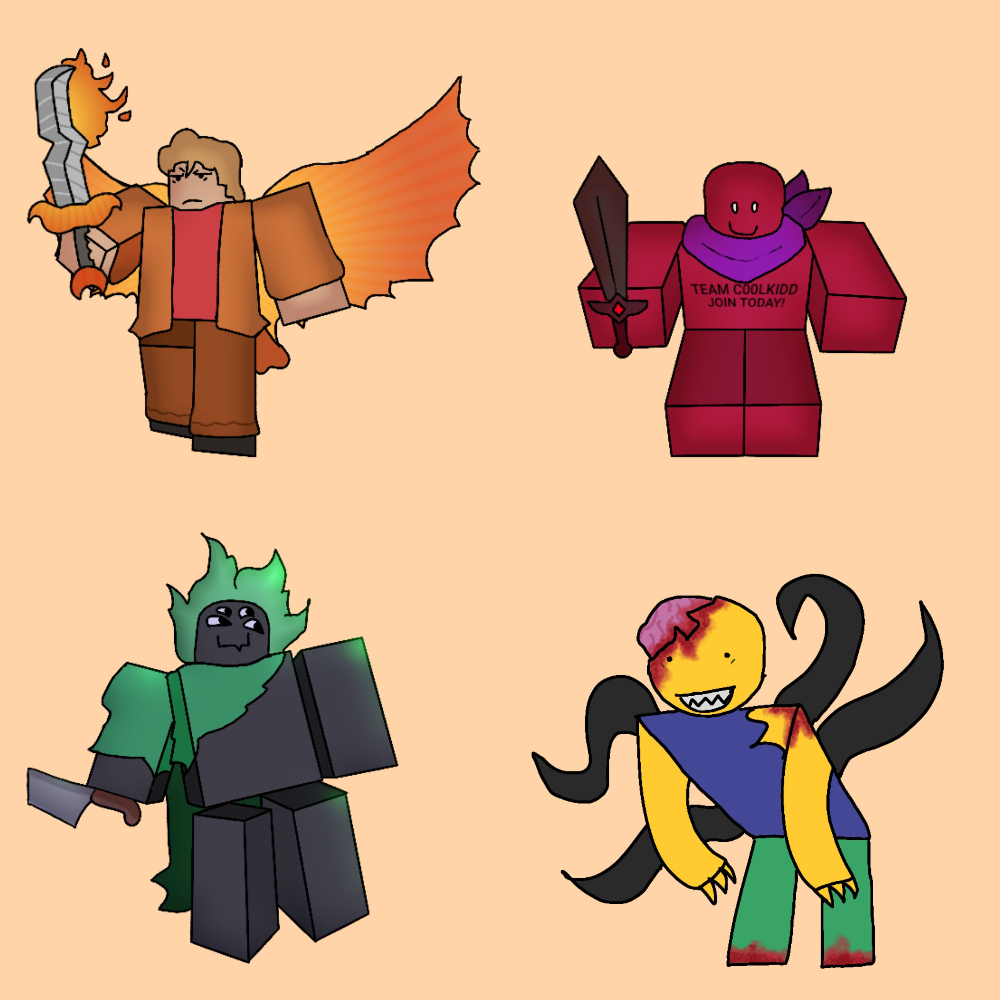

Last Flame of Life

Ideia
Esse projeto é um jogo Roblox inspirado por Forsaken, Die of Death e Dead by Daylight.
Personagens
 Processo
Ainda não começou devido à outro projeto estar em modo de prioridade.
Status
Em desenvolvimento.
Esse projeto é um jogo Roblox inspirado por Forsaken, Die of Death e Dead by Daylight.
Ainda não começou devido à outro projeto estar em modo de prioridade.
Em desenvolvimento.